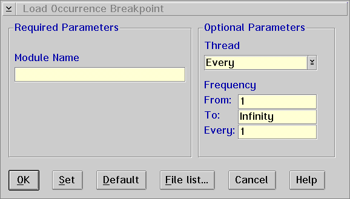

Displays the Load Occurrence Breakpoint window, which allows you to set a load occurrence breakpoint to stop the execution of your program when a specific module is loaded.

To use the Load Occurrence Breakpoint window, type the name of the module in the Module Name entry field. Execution stops when the module is loaded.
To set a load occurrence breakpoint when MY.DLL is loaded, you would type one of the following in the Module Name entry field:
MY or MY.DLL
Note: If the CAT_MODULE_LIST environment variable has been defined, and the module's name is not contained in the CAT_MODULE_LIST, the module will not be reported. If the module can not be found in the module search path, the module name will not be accepted. See Debugger properties... for information on identifying modules.
For a description of the types of data you can enter in the entry fields under the Optional Parameters group heading, refer to Set line....